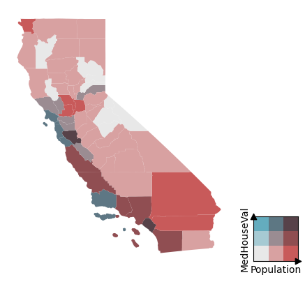

gp = BivariateGridPalette.from_dropdown()Plotting
Plotting functions with an example below
BivariateChoropleth
BivariateChoropleth (gdf:geopandas.geodataframe.GeoDataFrame, x:str, y:str, grid_size:int=3, gp=None, palette_name='blues2reds')
Class for Bivariate Choropleth
| Type | Default | Details | |
|---|---|---|---|
| gdf | GeoDataFrame | ||
| x | str | column name for the x part of the bivariate axis | |
| y | str | column name for the y part of the bivariate axis | |
| grid_size | int | 3 | grid size, used in pd.cut and GridPalette |
| gp | NoneType | None | |
| palette_name | str | blues2reds |
plot_bivariate_choropleth
plot_bivariate_choropleth (data:geopandas.geodataframe.GeoDataFrame, x:str, y:str, grid_size:int=None, grid_palette :bivariate_choropleth.grid_palette.GridPalette =None, palette_name:str='blues2reds', return_frame:bool=False)
Plotting function for bivariate choropleth.
| Type | Default | Details | |
|---|---|---|---|
| data | GeoDataFrame | ||
| x | str | ||
| y | str | ||
| grid_size | int | None | Overrides grid_palette size if given |
| grid_palette | GridPalette | None | Defaults to palette_name |
| palette_name | str | blues2reds | Only used if grid_palette is None |
| return_frame | bool | False | |
| Returns | Axes |
An example
from bivariate_choropleth.shapefiles import load_gdfload the geodataframe from default path
ca = load_gdf('ca_counties')
ca = ca.to_crs(epsg=4326)
ca.head()| STATEFP | COUNTYFP | COUNTYNS | GEOID | NAME | NAMELSAD | LSAD | CLASSFP | MTFCC | CSAFP | CBSAFP | METDIVFP | FUNCSTAT | ALAND | AWATER | INTPTLAT | INTPTLON | Shape_Leng | Shape_Area | geometry | |
|---|---|---|---|---|---|---|---|---|---|---|---|---|---|---|---|---|---|---|---|---|
| 0 | 06 | 091 | 00277310 | 06091 | Sierra | Sierra County | 06 | H1 | G4020 | None | None | None | A | 2.468695e+09 | 2.329911e+07 | +39.5769252 | -120.5219926 | 375602.758281 | 4.200450e+09 | POLYGON ((-120.6556 39.69357, -120.65554 39.69... |
| 1 | 06 | 067 | 00277298 | 06067 | Sacramento | Sacramento County | 06 | H1 | G4020 | 472 | 40900 | None | A | 2.499984e+09 | 7.542543e+07 | +38.4500161 | -121.3404408 | 406584.174167 | 4.205516e+09 | POLYGON ((-121.18858 38.71431, -121.18732 38.7... |
| 2 | 06 | 083 | 00277306 | 06083 | Santa Barbara | Santa Barbara County | 06 | H1 | G4020 | None | 42200 | None | A | 7.084063e+09 | 2.729752e+09 | +34.5370572 | -120.0399729 | 891686.747247 | 1.449841e+10 | MULTIPOLYGON (((-120.7343 34.90069, -120.73431... |
| 3 | 06 | 009 | 01675885 | 06009 | Calaveras | Calaveras County | 06 | H1 | G4020 | None | None | None | A | 2.641785e+09 | 4.384187e+07 | +38.1838996 | -120.5614415 | 367005.879680 | 4.356213e+09 | POLYGON ((-120.63095 38.34111, -120.63058 38.3... |
| 4 | 06 | 111 | 00277320 | 06111 | Ventura | Ventura County | 06 | H1 | G4020 | 348 | 37100 | None | A | 4.771988e+09 | 9.473454e+08 | +34.3587415 | -119.1331432 | 527772.242190 | 8.413293e+09 | MULTIPOLYGON (((-119.32923 34.22784, -119.3292... |
from sklearn.datasets import fetch_california_housing
import shapely
from shapely import Pointprocess the dataset. Get house prices from the Sklearn dataset. Create a geometry column (Point) with shapely. Perform a spatial join
housing = fetch_california_housing(as_frame=True)
housing_data = housing.data.join(housing.target)
housing_data['geometry'] = housing_data.apply(lambda x: Point(x.Longitude, x.Latitude), axis=1)
housing_data = gpd.GeoDataFrame(housing_data, geometry='geometry', crs="EPSG:4326")
housing_data = gpd.sjoin(housing_data, ca, how='left', predicate='within')get the average per county (index to join on to the spatial data)
county_level_data = housing_data.groupby('COUNTYNS')[['Population', 'MedHouseVal']].mean()
ca_geo = ca.set_index('COUNTYNS')[['geometry']]
county_level_data = ca_geo.join(county_level_data)ax, cax = plot_bivariate_choropleth(county_level_data, y='MedHouseVal', x='Population', grid_palette=gp)